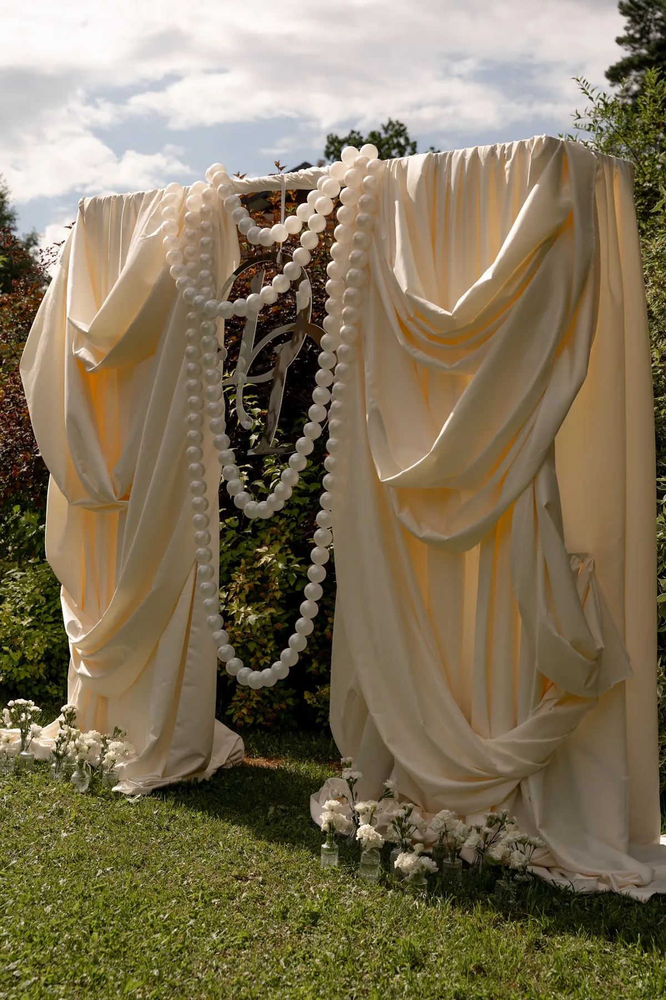

Арка для выездной регистрации — один из самых заметных элементов свадьбы, и многие пары задумываются: может, сделать самим? Иногда это разумно, иногда — нет. Сравниваем два пути и рассказываем, на что обратить внимание.
Когда можно сделать самим
- Конструкция лёгкая и небольшая, место закрытое или защищено от ветра.
- Есть время на пробную сборку и помощники.
- Вы готовы потратить силы и нервы в день свадьбы или заранее нанять помощь.
Простая композиция из ткани и нескольких цветов вполне реальна, если подготовиться заранее.
Где подстерегают сложности
- Каркас и устойчивость. Арка должна стоять надёжно, особенно на улице; ветер легко её опрокидывает.
- Драпировка. Складки и объём требуют опыта и достаточного количества ткани.
- Цветы. Живые цветы нужно ставить в последний момент, обеспечить воду и тень.
- Время. Монтаж в день церемонии — это часы, когда у пары и близких много других дел.
- Демонтаж. Конструкцию нужно убрать после мероприятия.
Сравнение
Своими руками: больше контроля и личного участия, но требует времени, помощников и подготовки; результат зависит от опыта и погоды.
На заказ: студия подбирает форму, делает каркас, монтирует и демонтирует; вы получаете согласованную идею и меньше хлопот. Подробнее — в статье про декор на заказ. Можно также обсудить часть работ отдельно, например каркас и монтаж.


Если решили делать сами
- Соберите арку заранее в тестовом режиме.
- Утяжелите основание и закрепите ткань, особенно на улице.
- Берите ткань с запасом.
- Продумайте план на ветер и дождь.
- Договоритесь, кто и когда монтирует и убирает.
Формы арок и материалы — в статье про свадебную арку, а ткани — в статье про текстиль и драпировку. Чек-лист для выездной регистрации — в статье про выездную регистрацию.
Расскажите о площадке и дате — предложим форму арки и посчитаем смету.
Частые вопросы
Можно ли сделать арку самим?
Да, если она лёгкая и вы заранее подготовились. Для больших конструкций и уличных церемоний рискованнее.
Что сложнее всего сделать самим?
Каркас, драпировку и цветы: от них зависит надёжность и внешний вид.
Можно ли заказать только часть?
Да: например, каркас и монтаж, а остальное обсудить отдельно.